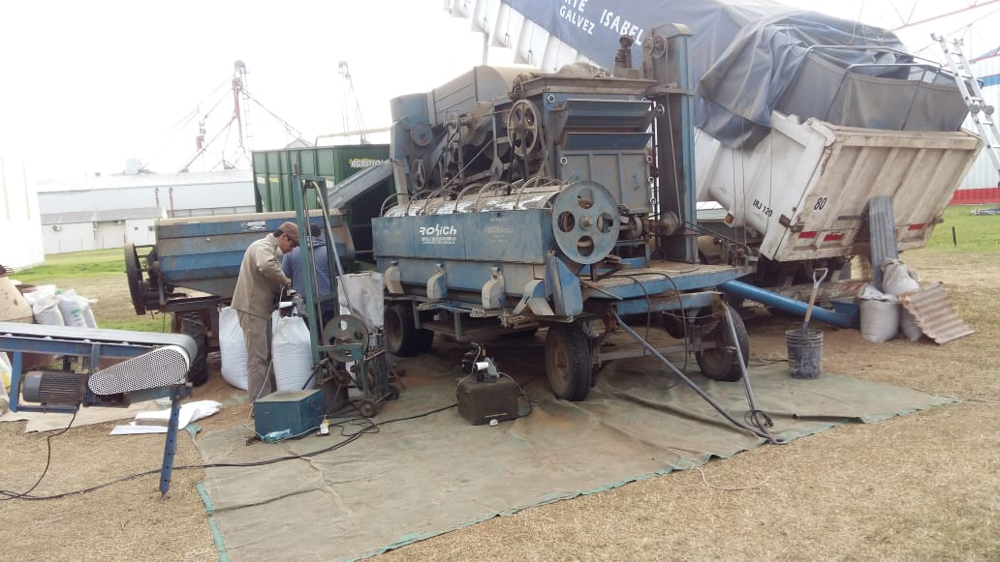
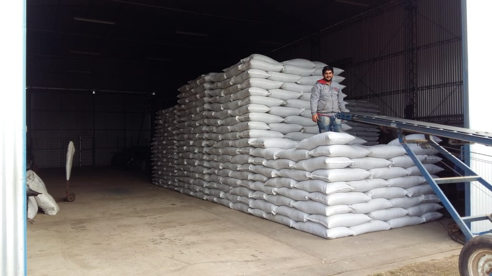

Multiplicamos el valor de tu producción
Equipamiento de primer nivel
Zarandas y discos alveolados para una limpieza profunda.
Modalidad flexible
Servicio disponible a granel o embolsado.
Almacenamiento seguro
Contamos con espacio adecuado para conservar la calidad.
Capacidad de traslado
Logística propia para llevar nuestro servicio donde sea que estés.
Amplia experiencia en
Trigo, Maíz, Soja, Girasol, Cebada, Cilanto, Sorgo, Lentejas, Garbanzo, Arveja.
Optimización de valor
Procesos que aseguran máxima pureza, diferenciando granos enteros que pueden ser sembrados nuevamente.


30 años de historia
Fundada en 1992,
nuestra empresa combina experiencia y tecnología para ofrecer soluciones todo-en-uno en materia de limpieza y selección de semillas en Santa Fe, corazón agrícola de la Argentina.
Nos distingue nuestro compromiso, la excelencia operativa y la personalización de nuestos servicios, asegurando la máxima satisfacción de nuestros clientes.
Encontranos muy cerca tuyo
Estamos en el parque industrial de Gálvez, Santa Fe.
Contamos con capacidad para trasladarnos dentro la zona para prestar nuestros servicios en su propiedad.
Contacto
- Dirección: T. Espora Lote 8 - Parque Industrial de Gálvez, Santa Fe, Argentina
- Tel: 3404-529290
- WhatsApp: +5493404529290
- E-mail: rosichmarcos@gmail.com